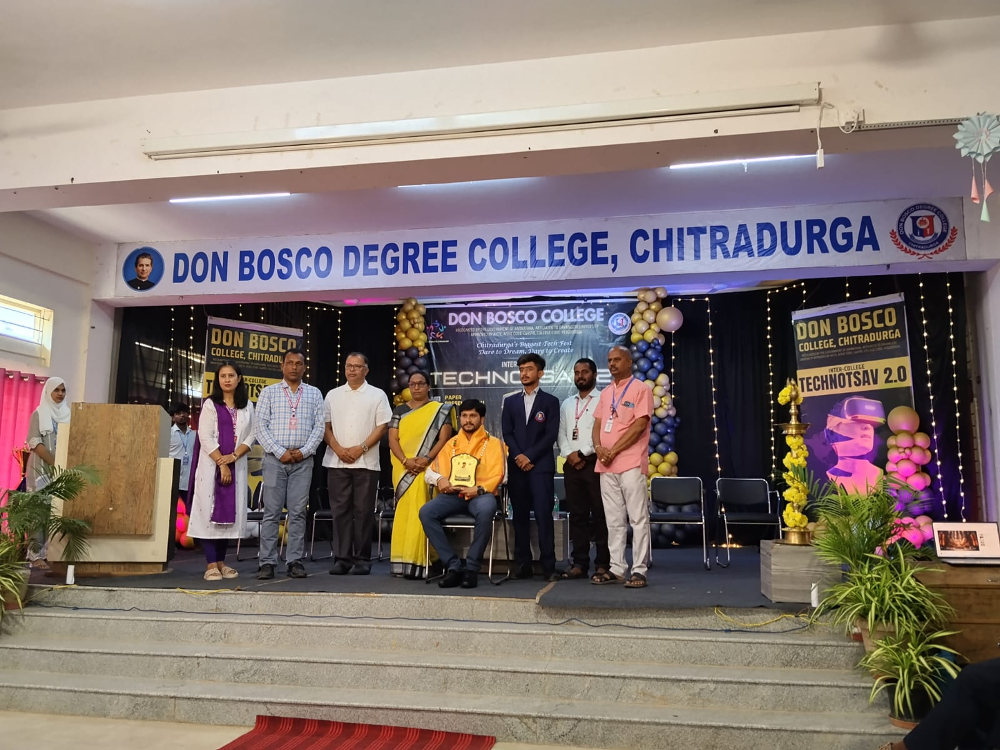
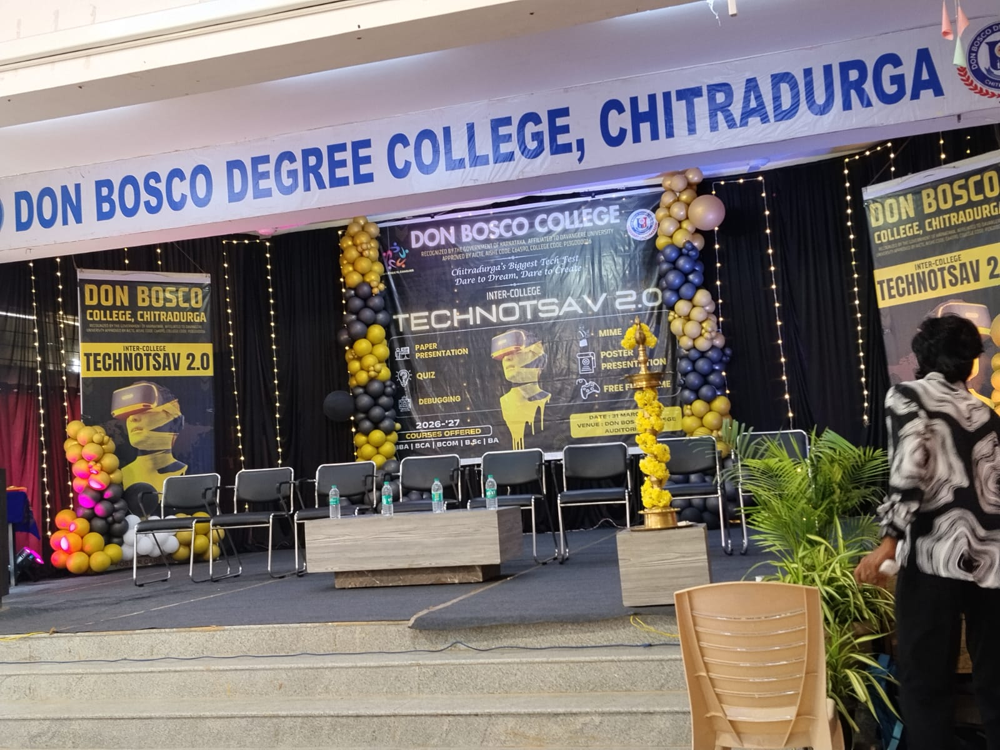
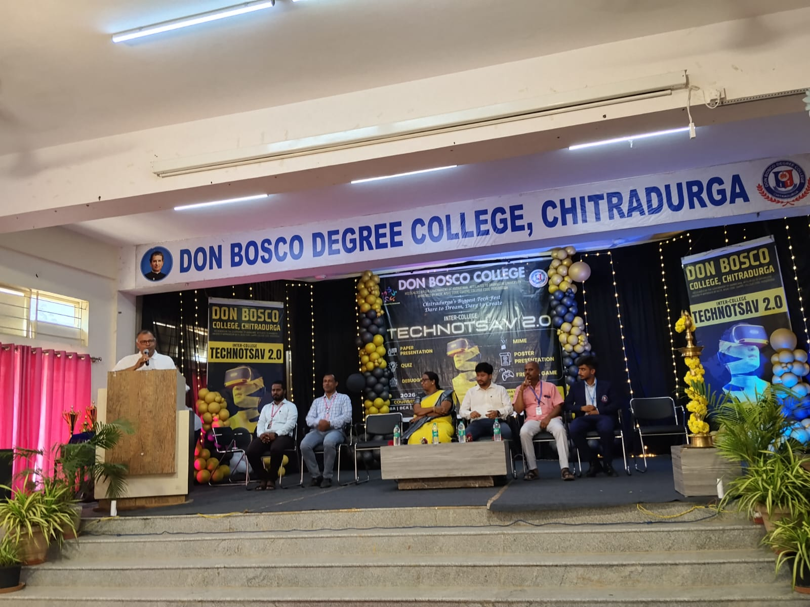
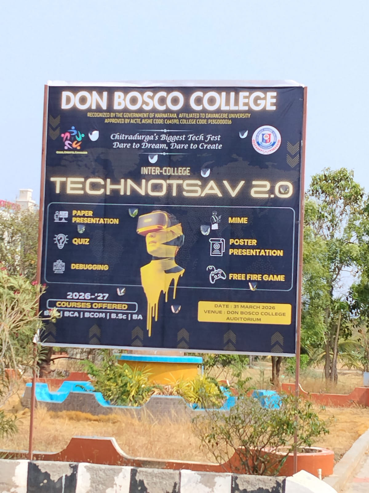

01 // ABOUT THE FEST
WHERE VIBES
MEET IDEAS.

ABOUT THE FEST
TECHNOTSAVA 3.0
TECHNOTSAVA 3.0 is the intra-department fest of Don Bosco Degree College, jointly organised by the Departments of BCA and B.Sc. It happens right here on campus, with our own students competing, performing and celebrating together.
From paper presentations and blind coding to ramp walk, dance and a stress-busting finale – one day, zero boring moments.

ABOUT THE COLLEGE
DON BOSCO DEGREE COLLEGE, CHITRADURGA
Recognized by the Government of Karnataka and affiliated to Davangere University, Don Bosco Degree College is approved by AICTE (AISHE Code: C64590, College Code: P13GD0016).
Rooted in the Salesian tradition, the college offers BBA, BCA, B.Com, B.Sc and BA programmes – shaping students who Learn, Explore and Excel.

ABOUT THE DEPARTMENT
DEPARTMENT OF BCA
The Department of Computer Applications is the engine behind Technotsava. It builds strong foundations in programming, web and app development and emerging tech like AI and cybersecurity.
Code, build, break, rebuild – and every year, Technotsava is where that spirit goes live.

ABOUT THE DEPARTMENT
DEPARTMENT OF B.Sc
The Department of Science builds strong fundamentals in Physics, Chemistry, Mathematics and Computer Science, blending classroom learning with hands-on lab work and real experiments.
From core concepts to curiosity-driven projects, B.Sc students bring the analytical edge that powers Technotsava's tech and research events.